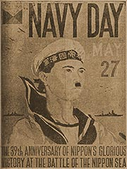

|
j
a v a s c r i p t |
May 30, 1944
A member of the German Club fell ill recently. The members were in a quandary because the German-speaking doctors in Manila — all leading members in their respective fields, incidentally — are all Jewish refugees from Nazi Germany. The members finally settled on Dr. Lissner, my doctor. "You know very well that I'm not allowed in the Club at all," he protested, but went anyway in view of the emergency. The diagnosis was acute appendicitis — immediate surgery required. The only available car belonged to a prominent Nazi, one K. of the Alhambra factory, but he refused to lend it because Lissner is Jewish. So the suffering man went to the hospital in a horse-pulled carretela. The club member who told me this story was livid, lacing his tale with profanity. Tribune: "Japs take foe positions in Palel Area.... Enemy remnants menaced — pill boxes blasted" — supposedly in "surprise attacks."

Defaced
"Government slackers will be fired." From now on, those absent ten days in any month will be fired. The poor fellows are just trying to earn a living. Rumors that half a million troops are coming sent prices up again. Meanwhile, property confiscations are on the increase — the latest: the Paules' huge concrete building in San Marcelino. The government is still silent. As a wag said today, "Don't you know? The Philippine government is not on speaking terms with the Japanese." The joke of the town is the painting of Hitler moustaches on the hundreds of Navy Day posters at the Escolta. |
|
|
|
|